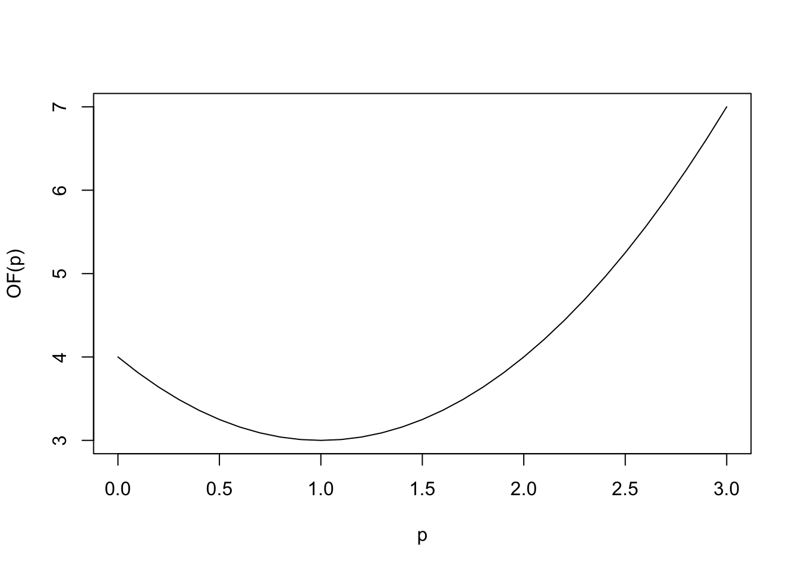

This tutorial describes how to perform numerical optimization in R. In general, an optimizer takes a one-argument function \(f(p)\) and an initial guess \(p_0\) and tries to find a minimum of \(f\), i.e. a value \(p^*\) such that \(f(p^*)\le f(p)\):
Since all R optimizers perform minimization, you have to encode your problem such that a minimum is sought (for example, in maximum likelihood estimation, the negative log-likelihood must be provided).
We take a quadratic function in several variables as an easy example, with minimum at \(p^*=(1,...,1)\):
Here’s a one-dimensional representation for illustration:

optimFunction optim has the following syntax:
par is the initial guessfn is the function to optimize over, as described above (with a single argument, a vector like par)Let’s consider the quadratic function example from before (in 3D):
By default, the Nelder-Mead algorithm is used. Other algorithms can be selected using argument method; the choice among them is discussed further below.
optimThe output of optim is a list; out$par contains the estimated parameters (see function help for more details):
## [1] 0.9994630 0.9997453 0.9999985We can see that this value is close to the theoretical solution, \(p^*=(1,1,1)\).
Function optim has an argument control, which contains more fine-grained control over the optimization. In particular, it allows to change tolerances (abstol/reltol) as well as the number of iterations (maxit). It also allows to define method-specific settings. See the function help for optim for more details.
Different optimizers are implemented in function optim, with different requirements and properties. Here’s an overview:
| Algorithm | Gradient-based? | Optimization type | Dimension of \(p\) | Lower/upper limits |
|---|---|---|---|---|
Nelder-Mead |
no | Local | \(>1\) recommended | not supported |
BFGS |
yes | Local | any | not supported |
CG |
yes | Local | any | not supported |
L-BFGS-G |
yes | Local | any | optional |
SANN |
no | Global | any | not supported |
Brent |
no | Local | 1 | mandatory |
Notes:
gr (the gradient), which can speed up the optimization considerably.Brent)BFGS, CG and L-BFGS-G differ in their memory requirements and update efficiency. For most problems, BFGS is a good choice among them.